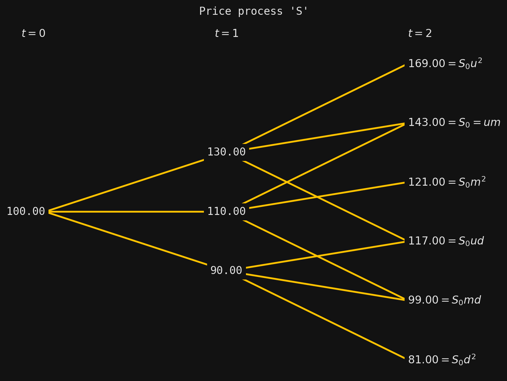

Finance with SigAlg III: Incomplete markets and trinomial pricing models
Finance
Pricing models
Trinomial pricing models
Incomplete markets
Equivalent martingale measures
Arbitrage
Fundamental Theorem of Asset Pricing
Probability theory
Measure theory
Stochastic processes
Sigma-algebras
Filtrations
Conditional expectations
Information theory
SigAlg
Python
Equivalent martingale measures; the Fundamental Theorem of Asset Pricing
For the reader who did not read the proof, the gist is this. Let \(R\) be the risk-free gross return of an arbitrage-free trinomial model, and let \(u\), \(m\), and \(d\) be the up-, middle-, an down-factors, respectively. Then the no-arbitrage condition \(d\leq R \leq u\) implies the second two inequalities in
\[ 0 \leq \max \left( \frac{m-R}{m-d}, 0 \right) \leq \frac{u-R}{u-d} \leq 1. \tag{7}\]
Then, the proof shows that there is a one-parameter family of EMMs for the trinomial model, parametrized by a number \(q\) between the middle two numbers in (7), namely
\[ \max \left( \frac{m-R}{m-d}, 0 \right) \leq q \leq \frac{u-R}{u-d}. \]
If we write \(a\) for the left-hand side of this interval, and \(b\) for the right-hand side, then we may reparametrize using the map
\[ \theta \mapsto q= (b-a)\theta + a, \]
and so our family of EMMs is parametrized by \(\theta\in [0,1]\).